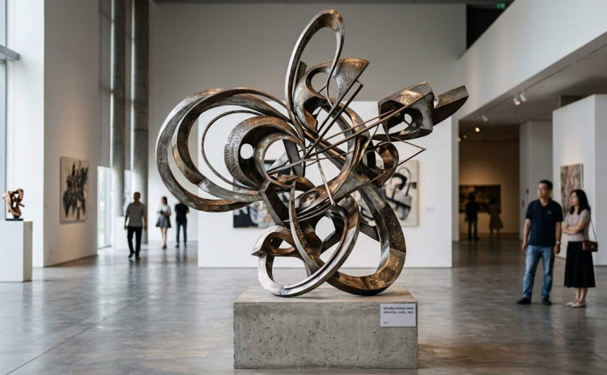
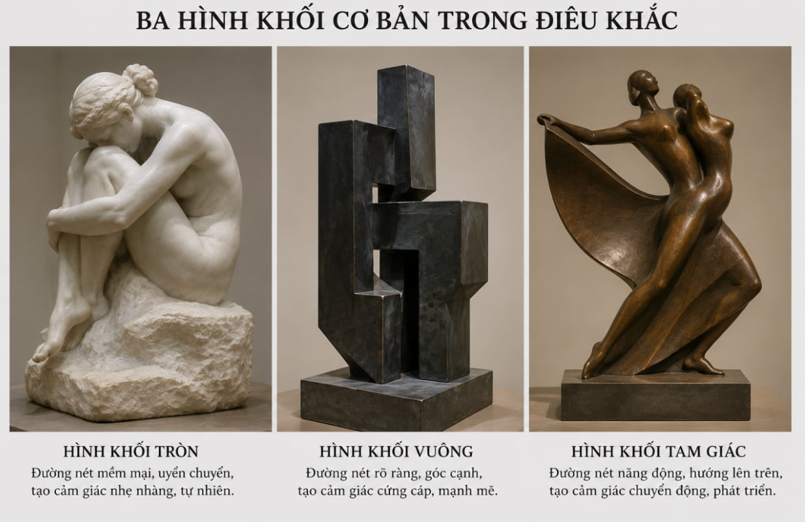
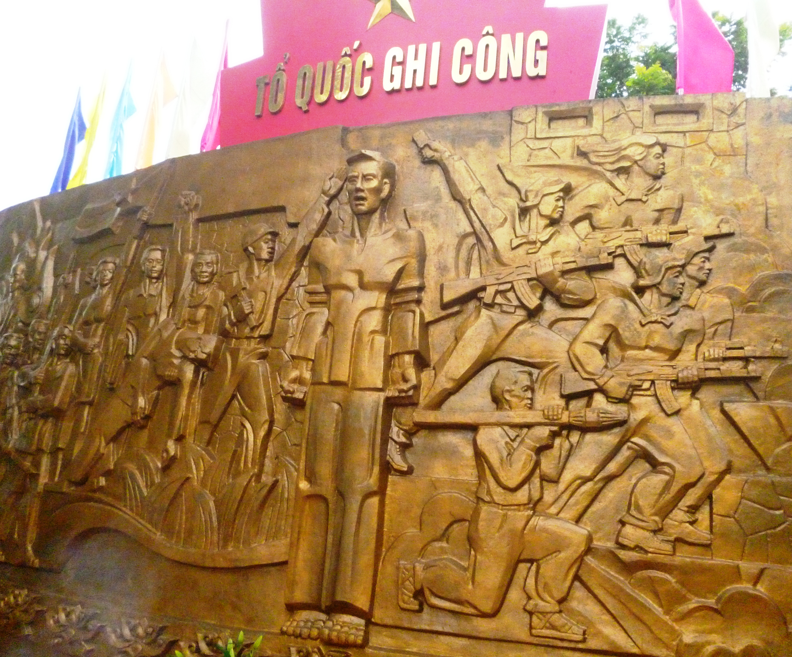
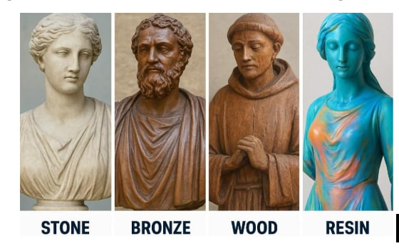
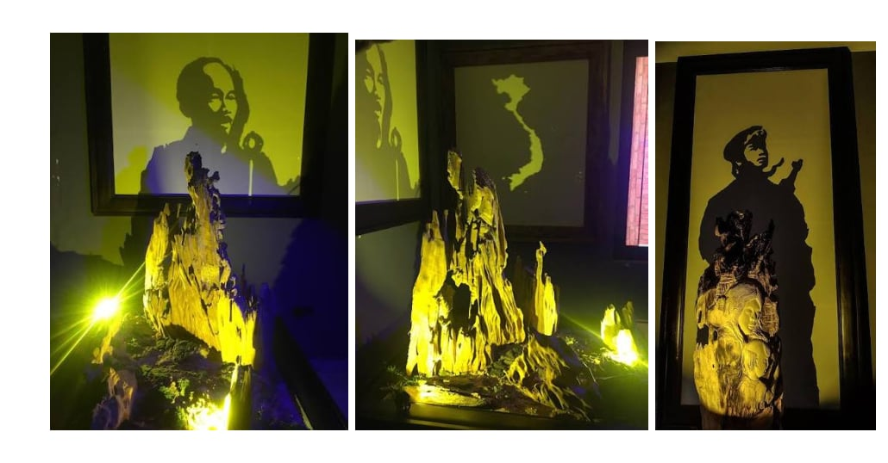

4. ĐẶC TRƯNG NGHỆ THUẬT ĐIÊU KHẮC
4.1. Không gian
Bản chất: Không gian là môi trường tồn tại và biểu đạt của tác phẩm điêu khắc.
Tính ba chiều: Có chiều dài, chiều rộng, chiều sâu; cho phép quan sát từ nhiều góc độ.

Tương tác với môi trường: Ánh sáng, thời gian, thời tiết và cảnh quan ảnh hưởng đến cách cảm nhận tác phẩm. Ví dụ: tượng Nữ thần Tự do chuyển từ màu đồng sang màu xanh do quá trình oxy hóa.

Không gian đô thị hiện đại: Điêu khắc xuất hiện tại công viên, quảng trường, đường phố, vườn điêu khắc…, góp phần làm đẹp cảnh quan, kết nối nghệ thuật với cộng đồng và phản ánh sự phát triển đô thị.

4.2. Hình tượng điêu khắc
Hình tượng điêu khắc được biểu đạt chủ yếu qua hình dáng, tư thế, cử chỉ, nét mặt và trạng thái của nhân vật, qua đó thể hiện cảm xúc, tính cách và tư tưởng.
Ví dụ:
- Người suy nghĩ (Rodin): tư thế cúi đầu, cơ thể căng lại thể hiện sự trầm tư, suy tưởng.
- Nữ thần chiến thắng Samothrace: đôi cánh và dáng người vươn về phía trước gợi cảm giác chuyển động, chiến thắng.
- Kỵ sĩ đồng: hình tượng người cưỡi ngựa biểu trưng cho quyền lực và sức mạnh.

4.3. Ngôn ngữ tạo hình điêu khắc
Gồm bốn yếu tố chính:
- Hình khối: Yếu tố cốt lõi, tạo nên thể tích và cảm giác nặng – nhẹ, cứng – mềm, tĩnh – động, khối đóng – khối mở.
- Đường nét: Có thể mềm mại, uyển chuyển hoặc mạnh mẽ, dứt khoát; góp phần thể hiện tư thế, cảm xúc và nội tâm nhân vật. Ví dụ: tượng Nguyễn Văn Trỗi của Nguyễn Hải.
- Màu sắc: Chủ yếu khai thác màu tự nhiên của chất liệu, đồng thời góp phần tạo hiệu quả thẩm mỹ và biểu cảm.
- Ánh sáng: Làm nổi bật khối lồi, khối lõm, tạo bóng và làm thay đổi cảm nhận về hình thể tác phẩm.




4.4. Chất liệu điêu khắc
Chất liệu vừa là phương tiện tạo hình, vừa ảnh hưởng đến phong cách và hiệu quả biểu đạt của tác phẩm.
| Chất liệu | Đặc điểm |
|---|---|
| Gỗ | Có vân, màu sắc tự nhiên, tạo cảm giác gần gũi; thường dùng gỗ mít, dổi, vàng tâm. |
| Đá | Bền chắc, đa dạng màu sắc và bề mặt, phù hợp với nhiều hình thức tạo hình. |
| Xi măng | Chắc, dễ tạo khối, phù hợp với nhiều công trình và tác phẩm ngoài trời. |
| Đồng thau | Có ánh kim, dễ tạo hình qua các kỹ thuật gia công thích hợp. |
Điêu khắc hiện đại còn tạo ra các sản phẩm ứng dụng như kỷ niệm chương, tay nắm cửa, khung ảnh, đồ nội thất… Sự phát triển của vật liệu mới và công nghệ góp phần mở rộng khả năng sáng tạo, hình thức biểu đạt và tính ứng dụng của nghệ thuật điêu khắc.

Tiểu kết: Nghệ thuật điêu khắc có bốn đặc trưng nổi bật: không gian, hình tượng, ngôn ngữ tạo hình và chất liệu. Không gian tạo mối liên hệ giữa tác phẩm với môi trường; hình tượng biểu đạt tư tưởng, cảm xúc; hình khối, đường nét, màu sắc và ánh sáng tạo nên hiệu quả thẩm mỹ; chất liệu mở rộng khả năng sáng tạo. Các yếu tố này kết hợp chặt chẽ, làm nên tính đặc thù và sự phong phú của nghệ thuật điêu khắc.